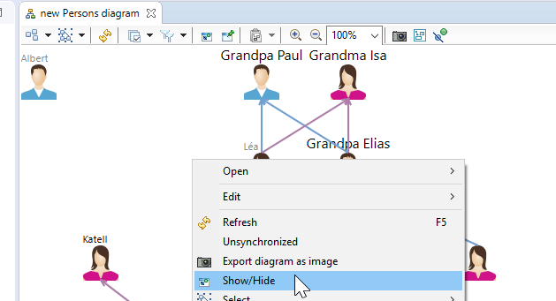
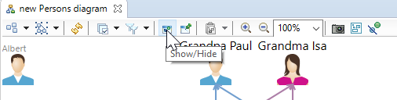
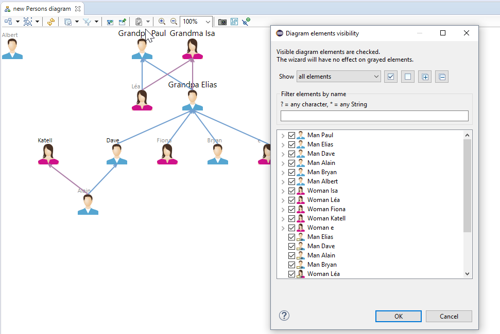
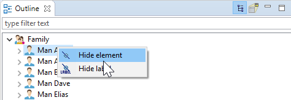
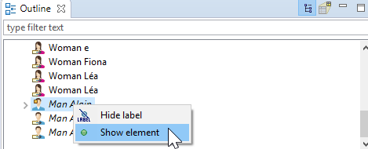
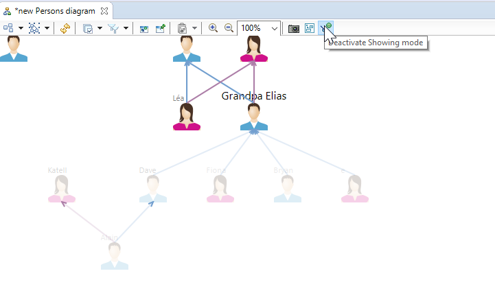

Sirius Evolution Specification Enhance management of show/hide elements on diagram
Preamble
Summary: Enhance management of show/hide elements on diagram
| Version |
Status |
Date |
Authors |
Changes |
| v0.1 |
DRAFT |
2017-11-06 |
pguilet |
Initial version. |
| v0.2 |
DRAFT |
2018-07-04 |
pguilet |
Update for industrialization |
Relevant tickets:
DOREMI-3596, Enhanced management of visible/hidden elements in diagrams
Introduction
The goal of this POC evolution is to find solutions to make easier for user to show/hide diagram elements. The current mechanism is not very efficient to achieve such tasks. The mechanism show/hide uses the same kind of action and wizards to edit their binary properties on diagram elements.
State of the existing
Different mechanisms exist to hide/show diagram elements. One using contextual menu actions on selected element, one global to all diagram elements using a wizard and one using the outline.
N.B the show/hide functionality is independent from the VSM filter functionality. Diagram elements can be hidden by both. It means making it visible from one mechanism will not make it visible on the diagram. It must be visible from both mechanism point of view.
Show/hide modification done by the editing Wizard
To change the hidden status of diagram elements a wizard is available.
This wizard can be opened by using the toolbar button or contextual action on the diagram selection only:


It shows all diagram’s elements hidden and not hidden:

A diagram element is said hidden if it is unchecked in the wizard. Also the element should not be visible in the diagram. If checked, the element should be visible.
Show/hide modification done by the Outline
The hidden status of diagram elements can be also changed by using contextual menu actions on the tree representation of the diagram editor’s outline:


The last way to hide diagram elements is to select one or many from a diagram editor and to select the «hide» contextual menu action:

This mechanism cannot be used to show diagram elements because invisible elements cannot be selected.
Known issues/limitations
Show/hide
The current mechanism is not efficient from a user perspective in the following situations:
- When a user want to know which diagram elements are hidden and to show some of them that he can only use with the edit wizard and the outline. He cannot do that from the diagram directly by selecting the invisible element because by definition they cannot be seen. So he has to know which invisible element he wants to show from a string representation without relation to its position in the diagram and the area the user is currently looking at. Then the user must find it in the wizard or outline and show it.
Results after the POC
- A button allows to activate/deactivate the layouting mode. This layouting mode shows invisible diagram elements with a slight transparency:

- A double click on a diagram element node or edge change its visibility. It should change the user visibility instead. It also does not hide labels.
Functionalities for the Show/hide mode industrialization
The functionalities that will be implemented are the following:
Double click on hidden element in showing mode shows elements recursively
- For an invisible edge it does not make sense to show it and keep its source and target node hidden. So a double click on an edge should reveals those nodes.
- Also when we have an invisible container containing an invisible child, double clicking on the child will automatically show the parent(s) recursively.
Restraining semantic modifications in show/hide and pin/unpin mode
When showing mode is activated, the user should not be able to do semantic modifications like for the layouting mode.
So when these modes are enabled, the following operation behaviors are changed:
- direct edit is disabled on all elements;
- moving elements by dragging them can be used to change their position, but will never trigger a drag and drop operation;
- moving the extremity of an edge to adjust its connection point (to the source or target element) is possible, but will never trigger a reconnection operation.
Filter removal in showing mode
Some diagram elements can be made invisible because of a graphical filter specified in the VSM. These elements are visible in showing mode as transparency element and can be made completely visible by a double click.
To do that, the filter must be deactivated:
- The user will be warned of the deactivation with a pop-up saying «Making visible this diagram element will deactivate the filter(s) F1, F2. Do you still want to make it visible?». A checkbox «Always deactivate filter(s)» will be available and user can click on OK or Cancel button. A new preference «Always deactivate filter(s) when making element visible in showing mode». This preference will be available in Sirius>Sirius Diagram>Showing Mode
The button to activate/deactivate show/hide mode will be put in a dropdown menu containing also the button to activate/deactivate layout mode and planned pin/unpin mode. Each mode is exclusive to the other.
The show menu action and its button in the tabbar will be available on selected invisible elements as well as the hide menu action and its button on visible elements to change visibility status.
Beyond the industrialization
Pin/Unpin mode
This mode is similar to the showing mode.
- It will have a button to be activated/deactivated.
- It will disable semantics changes like for the showing and layouting mode.
- A not pinned element will be shown with a transparency.
- It will provide a similar double click mechanism as the showing mode but to pin/unpin a diagram element. Edges cannot be pinned/unpinned.
Limitations
- A nice feature would be to make configurable the diagram elements to make visible with transparency when in show/hide mode is activated. This would allow to hide noise that we never want to show in dense diagram.
- User must be able to hide/show mappings completely instead of having transparency.
- Specifier should also have the capacity to hide noise from the mode.
- We must have a wizard like show/hide wizard that shows elements categorized by mappings and allow to show/hide those completely.
- We must have a new action on element, for example a right click allowing to hide completely the element and all elements which share its mapping in showing mode.
- A reflexion must be done about how the configuration can be achieved.
- On T4C we can categorize functional exchanges between ports. This functionality hide the ports and replace edges by one edge. However, these ports can already be revealed by the show/hide wizard without the showing mode activated. They are also visible in the showing mode. This is not really wanted.
- A lead can be to have a new kind of filter that would never show filtered elements in showing mode or to make configurable the mapping filter with a boolean telling to not make it visible in showing mode and show/hide wizard
Detailed Technical Specification
API Changes
From current analyze, a new boolean
isShowingModeEnabled seems to be necessary to be added to
org.eclipse.sirius.diagram.DDiagram.
Later we could replace this attribute by an enum field «DiagramMode» with values «Standard», «Layouting», «ShowHide» and later «PinUnpin» to be able to easily now the mode without having too much different attributes.
Documentation Changes
Tests and Non-regression strategy
JUnit/SWTbot Tests will be added to verify these new functionalities.